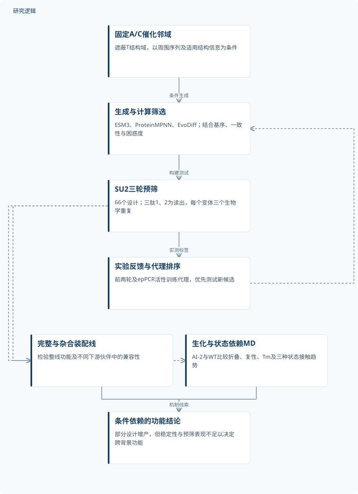
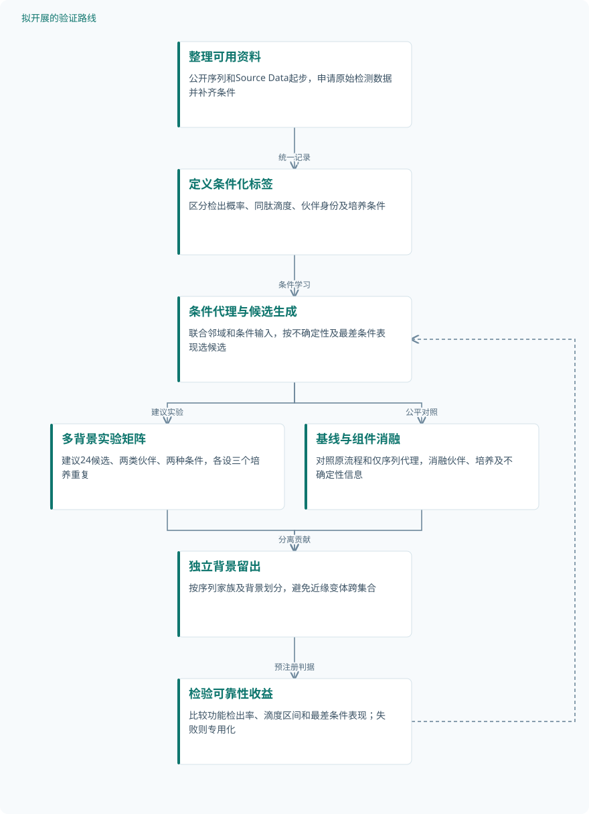

论文精读
生成式人工智能设计功能性硫载体结构域以重编程非核糖体肽合成酶
Generative AI designs functional thiolation domains for reprogramming non-ribosomal peptide synthetases.
精读更新 2026-10-03 16:20 · 依据论文全文整理
生成一个能折叠的蛋白，并不等于生成一个能在复杂装配线中工作的零件。非核糖体肽合成酶（NRPS）的T结构域必须在多个催化伙伴之间往返，适配随反应状态变化的瞬态界面。本文将条件生成与实验迭代结合，设计76个T结构域，并测试578个重组NRPS变体，证明部分设计能够支持完整及杂合装配线。阅读价值不仅在于增产，更在于厘清生成模型的结构评分、实验功能与跨背景兼容性之间的距离。
文章目录
载体结构域不是可以随意替换的连接件
NRPS能够合成具有药用价值的肽，但模块重组常因结构域通信受损而减产或失活。T结构域又称肽酰载体蛋白，通过4′-磷酸泛酰巯基乙胺（PPant）臂携带中间体，依次配合底物装载、缩合及产物释放。设计难点因此不是孤立折叠，而是保持多个催化状态下的相互作用兼容性。
本文选择GxpS作为工程平台，将装配线拆成由合成拉链SZ17/SZ18连接的两个组分。SU2单独表达提供简化预筛，与SU1共表达则恢复完整五模块系统。这样的层级验证能够区分“局部可用”与“整线可用”，也提醒我们不能把预筛活性直接解释为通用模块性能。
固定催化邻域，让生成与功能反馈共同筛选
作者固定目标T结构域两侧的A、C结构域，遮蔽并重新生成中间序列。ESM3结合序列与结构token，ProteinMPNN以骨架坐标为条件，EvoDiff提供仅序列生成基线。催化背景用于条件生成，但不能据此认定模型已经显式学习界面机制，或接受了硬性物理约束。
第二轮要求保留FFxxGGxS基序、与WT序列一致性至少50%，且ESM2 650M困惑度不高于4.8。第三轮利用前两轮及易错PCR（epPCR）文库的实测活性，比较嵌入线性回归、零样本评分和ESMC微调，最终以代理集成及不确定性排序候选。训练、验证、测试划分和独立消融未在所给资料中报告，因此不能把逐轮变化归因于某个组件。
原研究：条件生成到跨架构功能验证


展示已完成的设计与实验链条；生化和MD用于解释候选，不代表已建立界面增产因果。
下载 SVG图示关系说明
实线表示相邻阶段的信息流，虚线表示跨阶段联系或反馈。
固定A/C催化邻域 → 生成与计算筛选：条件生成；生成与计算筛选 → SU2三轮预筛：构建测试；SU2三轮预筛 → 实验反馈与代理排序：实测标签；实验反馈与代理排序 → 生成与计算筛选：迭代优选；SU2三轮预筛 → 完整与杂合装配线：优选候选；SU2三轮预筛 → 生化与状态依赖MD：代表设计；完整与杂合装配线 → 条件依赖的功能结论：迁移证据；生化与状态依赖MD → 条件依赖的功能结论：机制线索
从66个预筛设计走向完整与杂合装配线
SU2预筛三轮分别测试11、25、30个设计，每个变体有三个独立生物学重复，读出为线性三肽1、2。另有四个epPCR文库，共182个变体，用于局部探索并扩充代理训练数据；这些是真实突变变体，不是计算增强样本。全研究578个重组变体则是跨实验总量，不能充当任一比较的重复数。
完整GxpS选择八个设计，在20 mL succinate XPP培养中测量大环五肽6，全部检出产物，但只有AI-27和AI-38超过WT。杂合体系进一步检验非天然A–T–C配对，分别覆盖C/E和LCL型下游伙伴。三肽1、2与五肽6采用标准品校准的靶向定量；杂合肽9–26仅比较同一种肽的LC–MS峰面积，不能当作绝对滴度或跨肽比较。
机制验证同时包含实物生化测量与计算模拟：AI-2和WT分别接受表达、溶解性、复性及nanoDSF表征，MD则比较三种预组织催化状态。每个系统每种状态进行两条独立100 ns轨迹，不是生物学重复。模拟含PPant臂但不含共价连接的底物，能够讨论接触趋势，不能模拟真实转移或缩合反应。
| 验证任务 | 样本与规模 | 主要结果 |
|---|---|---|
| SU2最小系统的三轮T3设计筛选 | 三轮分别11、25、30个AI设计，共66个；各变体三个独立生物学重复，初始生成池规模未报告。 | 首轮ESM3为4/4有功能，ProteinMPNN为2/7；AI-27约163% WT，中等活性比例逐轮增加。 |
| 八个优选设计的完整GxpS验证 | 八个AI设计及WT对照，每组三个独立生物学重复；不是全部66个预筛设计的完整系统复测。 | 八个均检出产物；AI-27为257% WT、7.4 mg L⁻¹，AI-38为144%、4.1 mg L⁻¹，WT约2.9 mg L⁻¹。 |
| 三种杂合NRPS中的背景兼容性验证 | 前两体系各测试5个AI设计及天然对照；GxhS-2测试AI-67–76及天然对照，各组三个生物学重复。 | GxhS-1中AI-2、27、31主产物峰面积>4.5 × 10^6；GshS中AI-12约提升65%；GxhS-2中AI-71–76检出产物。 |
| AI-2的生化表征与状态依赖MD比较 | 生化实验三个独立生物学重复；热变性每个重复取三次技术测量均值；MD每系统每状态两条100 ns轨迹。 | AI-2更易可溶回收并有效复性，Tm约52 °C对比WT约40 °C；核心RMSD约1.5–1.8 Å，接触网络呈状态依赖变化。 |
展开数据来源、分组、对照与验证边界
SU2最小系统的三轮T3设计筛选
数据来源。GxpS来源SU2在E. coli中表达，以三肽flL（1）、FlL（2）形成自建序列—活性数据。
分组与工况。1 mL succinate XPP培养；第二轮增加EvoDiff及过滤，第三轮增加代理排序，22 °C培养48 h。
数据划分。前两轮及epPCR数据用于代理训练；训练、验证、测试划分未报告，第三轮不等同于严格独立测试集。
对照与消融。每次设置WT T3并归一化为100%；比较生成来源，但上下文、过滤及代理排序的独立消融未报告。
评价指标。SRM靶向LC–MS/MS，校准范围0.016–4 µM；相对WT产量及活性类别，报告均值±SD。
验证边界。优选候选不能代表整个生成池；检测限未报告，正文≥50%、≥80%与图例>50%、>80%存在边界差异。
八个优选设计的完整GxpS验证
数据来源。SU1/SU2经SZ17/SZ18重构五模块装配线，以主要产物cyclo(vLflL)（6）定量。
分组与工况。AI-2、12、15、27、31、38、44、59；20 mL succinate XPP，22 °C培养48 h。
数据划分。依据SU2表现及模型类别选取候选；属于跨系统功能验证，不构成已明确划分的模型测试集。
对照与消融。同条件WT完整装配线为对照，并与SU2表现比较；接口及生成组件独立消融未报告。
评价指标。外标校准LC–MS/MS SRM测产物6，单位mg L⁻¹；10 nM diphenhydramine内标归一化。
验证边界。仅AI-27和AI-38超过WT；优选后的命中率不可外推，产量比较未做假设检验，培养条件影响排序。
三种杂合NRPS中的背景兼容性验证
数据来源。GxpS与XtpS或SzeS重组，检验GxhS-1、GshS、GxhS-2中的非天然结构域配对。
分组与工况。GxhS-1、GshS下游为C/E型，GxhS-2为LCL型；20 mL succinate XPP培养48 h。
数据划分。属于跨背景实验验证；模型训练、验证、测试划分未报告，不能据此确认序列层面的独立泛化。
对照与消融。分别安装天然GxpS_T3、Sze_T4、GxpS_T2；上下文错配及界面残基独立消融未报告。
评价指标。肽9–26的EIC积分峰面积，报告均值±SD；仅比较匹配条件下同一种肽，不进行绝对定量。
验证边界。不同架构中的优劣不一致；不能跨肽比较峰面积，也不能将图7与RapidFire筛选计数直接合并。
AI-2的生化表征与状态依赖MD比较
数据来源。WT与AI-2的孤立及多结构域构建体；实物蛋白测量结合基于实验结构模板的同源建模。
分组与工况。生化使用相同连接区；MD比较硫醇化、缩合供体、缩合受体状态，采用AMBER24及ff19SB。
数据划分。不涉及训练测试划分；MD仅比较预组织状态，不含共价连接的氨基酸或肽中间体。
对照与消融。WT GxpS_T3为生化和模拟对照；结构模板、力场及界面残基的独立消融未报告。
评价指标。SDS–PAGE、SEC、nanoDSF及RMSD等；氢键距离≤3.0 Å、角度≥135°，重原子接触距离≤4.5 Å。
验证边界。表达、溶解比例和复性回收率精确值未报告；两条轨迹支持趋势比较，不确立单个接触显著性或增产因果。
功能提升成立，界面因果与迁移规律仍待建立
完整GxpS中AI-27达到257% WT，即7.4 mg L⁻¹；epPCR所得变体123在SU2中达到285% WT，但不能将两者混为同一系统的最佳设计。序列一致性不足以预测功能，66个设计的平均pLDDT也未显示与生产滴度显著相关。中等活性比例逐轮增加，高活性比例却在第二轮后下降，说明主动学习并未带来所有指标的单调改善。
AI-2的熔解温度约52 °C，复性WT约40 °C，且表达和复性表现更好。MD显示两者T结构域核心RMSD约1.5–1.8 Å，但状态依赖的接触网络不同；这支持机制假设，而非界面变化导致增产的因果证明。AI-2也并非在所有背景下最高产，稳定性不能替代整线功能评价。
证据边界还包括培养条件改变滴度与排序、产量比较未做统计假设检验，以及实验未随机化或设盲。图1d两枚质粒均标作SU2，完整体系应按正文理解为SU1与SU2；RapidFire的GxhS-1类别计数仅合计74个，不能补造其余两个类别。后续最值得投入的方向，是把背景依赖变成可预测变量，并用干预实验分离折叠收益与界面收益。
从这篇论文走向下一项研究
以下为结合研究方向提出的候选方案，实验设计与预期目标有待验证。
建立跨催化邻域与培养条件的可靠性设计
问题与短板。现有活性标签依赖装配线和培养条件，优选设计不能稳定跨背景迁移。建议先补齐标签条件与检测限，再检验模型预测的是序列能力还是实验环境。
改进机制。将A/C伙伴身份、T位置和培养条件共同输入代理，分别预测检出概率与条件滴度。用不确定性驱动候选选择，并把最差条件表现纳入排序，避免只追求单点最高产。
候选创新。条件生成与主动学习已有实现，候选创新是把邻域迁移和多条件可靠性组成统一目标。该新组合需要独立留出背景验证，不能仅凭训练集拟合优度成立。
数据与实验设计。公开序列和Source Data可作起点，原始LC–MS需申请。建议设计24个候选，跨两类下游伙伴、两种培养条件各设三个独立培养重复；新增资料需采集，可合作完成检测。
对照与消融。比较WT、原筛选流程、仅序列代理及条件代理。消融伙伴标签、培养标签和不确定性选择；按序列家族与完整背景留出测试，近缘epPCR变体不跨训练测试集。
成功判据。预注册主要指标为留出背景的功能检出率、同肽滴度和最差条件相对产量。与原流程同预算比较并报告置信区间，要求收益跨条件保留，而非仅改变候选排序。
风险与替代方案。候选数有限可能混淆培养噪声和背景效应，应先做方差评估再调整规模。若跨背景预测失败，退回伙伴类别专用模型；无标准品的肽只报告同条件相对丰度。
以界面干预区分折叠收益与催化通信收益
问题与短板。AI-2兼有折叠改善和接触网络变化，现有资料尚不能确定增产来自哪一因素。建议优先验证少数状态依赖接触，而不是直接扩展更大生成库。
改进机制。依据MD提出接触残基假设，设计回退突变和匹配伙伴的补偿突变，联合测量表达、溶解性与产物。只有功能变化不能由折叠损伤解释，才支持接口贡献。
候选创新。定点突变本身是已有方法，候选创新是将状态接触、补偿干预和多背景读出串联。相关OaaC研究摘要提示载体装载状态可能影响相互作用，但不能直接移植其二聚机制。
数据与实验设计。建议设计12个单点或成对突变构建体，在WT与AI-2背景各设三个独立培养重复，并选择两个催化邻域复测。序列可公开获取，轨迹需申请，蛋白测量和检测需另行采集。
对照与消融。设置WT、AI-2、非界面位置突变和只损害折叠的对照，比较单突变与补偿组合。检测可通过合作平台完成，不能假定已有nanoDSF或质谱条件。
成功判据。成功判据是匹配补偿恢复同肽产出，并在可溶表达相近时仍呈可重复效应。同步报告生化变化与产量区间，不把模拟占有率变化单独视为因果证据。
风险与替代方案。突变可能影响PPant修饰或全局折叠，应先排除激活缺陷。若补偿失败，转向局部饱和突变和体外功能验证；相关OaaC资料仅有摘要，不借用其具体实验参数。
研究建议：面向多背景可靠性的条件设计


对应第一条路线，全部为拟议设计；以独立背景检验可靠性，不将预期收益写成实测结果。
下载 SVG图示关系说明
实线表示相邻阶段的信息流，虚线表示跨阶段联系或反馈。
整理可用资料 → 定义条件化标签：统一记录；定义条件化标签 → 条件代理与候选生成：条件学习；条件代理与候选生成 → 多背景实验矩阵：建议实验；条件代理与候选生成 → 基线与组件消融：公平对照；多背景实验矩阵 → 独立背景留出：独立检验；基线与组件消融 → 独立背景留出：分离贡献；独立背景留出 → 检验可靠性收益：预注册判据；检验可靠性收益 → 条件代理与候选生成：反馈或退回专用模型